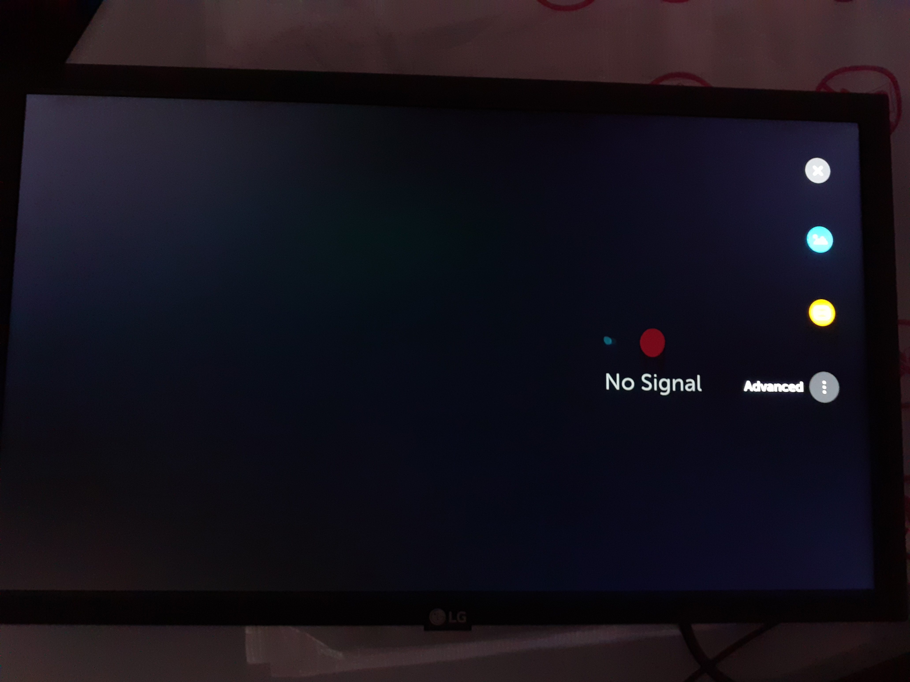
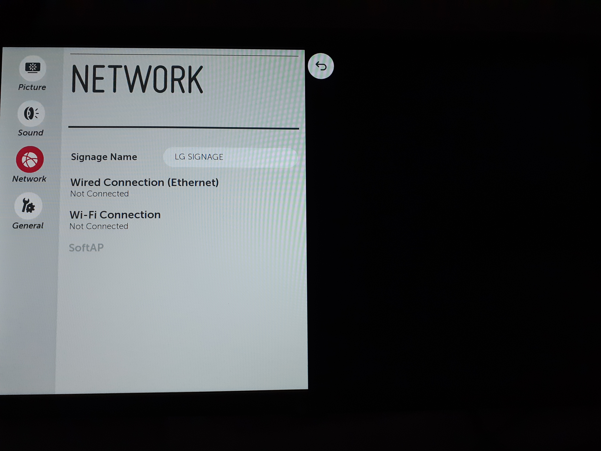
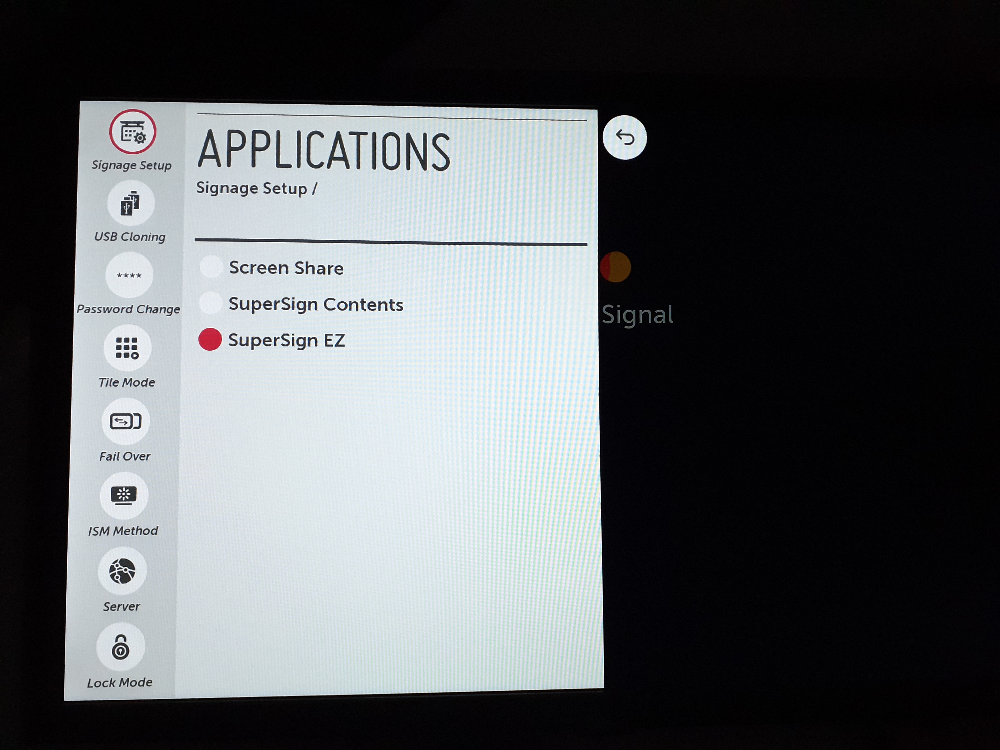

Las llaves usadas en el control remoto
Initialización
Elije tu idioma, país y zona horaria de su sitio
Cuidado, poner la hora correcta est fundamental
Configuración de la red
Presiona el botón Settings, y va en en menú et allez dans le menu Configuración avanzada
Vaya en 'RED'y elije el tipo de conexión deseado
No podrás instaar la aplicación, si su pantalla no está conectada al internet.
No la conecta con un red de tipo Wifi para invitados (este tipo de red a menudo tiene parametros demasiado cerrados para que la aplicación funcione correctamente)
Conexion cableada
Si no utilisas un red co IP fijas, será conectado automaticámente al enchufar el cable
De lo contrario, por favor, rellene los datos de la red proporcionados por su oficina central o su proveedor de servicios de Internet
Conexión Wifi :
Elija la red deseada e introduzca su contraseña
No podrás instaar la aplicación, si su pantalla no está conectada al internet.
No la conecta con un red de tipo Wifi para invitados (este tipo de red a menudo tiene parametros demasiado cerrados para que la aplicación funcione correctamente)
Abra el menú oculto manteniendo pulsado el botón SETTNGS hasta que aparezca una burbuja en la esquina superior derecha de la pantalla.
Presione rápidamente el botón 0 4 veces, y luego presione OK
(Atención: Los números no aparecen en la pantalla)
Ajuste los siguientes parámetros de la siguiente manera
AUTO POWER = OFF
SPEAKER = OFF
Instalación de la aplicación Deepidoo
Ve a APLICACIONES, y desmarca todas las casillas
En el menú SETTINGS, vaya a Advanced Network Settings
Ajuste los siguientes parámetros de la siguiente manera
=> Application Launch Mode = Local
=> Nombre de dominio calificado = ON
=> Ingresa esta URL 'http://webos.deepidoo.com/dj/ipk'
=> Application Type = IPK
=> Por último, vaya a Actualización de la Aplicación Local, elija REMOTO. Confirme con OK y luego confirme